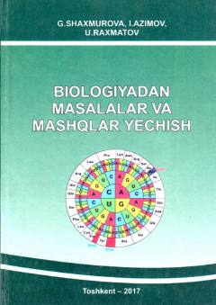

BMBiologiya fanidan turli darajadagi masala va mashqlarni yechish metodikasiga bag'ishlangan o'quv qo'llanma.
Ushbu o'quv qo'llanma pedagogika oliy o'quv yurtlari talabalari va biologiya o'qituvchilari uchun mo'ljallangan bo'lib, botanika, zoologiya, fiziologiya va sitologiya kabi yo'nalishlarga oid masalalar va ularni yechish usullarini o'z ichiga oladi. Qo'llanmada turli murakkablikdagi biologik masalalar, ularning shartlari, ishlash usullari va metodik ko'rsatmalar batafsil bayon etilgan. Kitob o'quvchilarning mantiqiy fikrlashi va nazariy bilimlarni amaliyotga tatbiq etish ko'nikmalarini rivojlantirishga xizmat qiladi.